Proportion/examples/
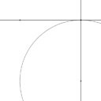
Minimal start: a very short HTML page that uses Proportion
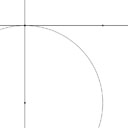
Adding: using Proportion to make points, lines, and circles
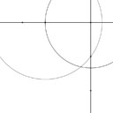
Intersections: making points by instersecting lines and circles
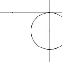
Parametric: adding points on lines and circles
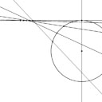
Parmetric spew: using parametric points to make many objects
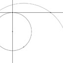
Animating: motion from parametric points and a frame counter

Stress test: using "addClosestPointParam"
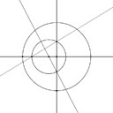
First and Second: naming intersections
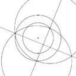
Machines: many frequently-used constructions
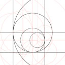
Groups: organizing marks to use color, and a second animation style
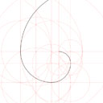
Marks: making line segments and arcs

Lofting: filling areas betwen arcs and segments

Lofting: watch your parameter directions
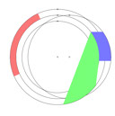
Lofting tests test cases